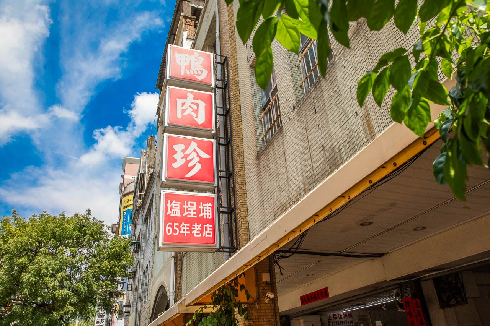
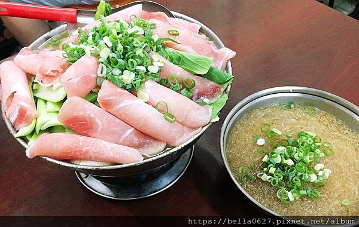
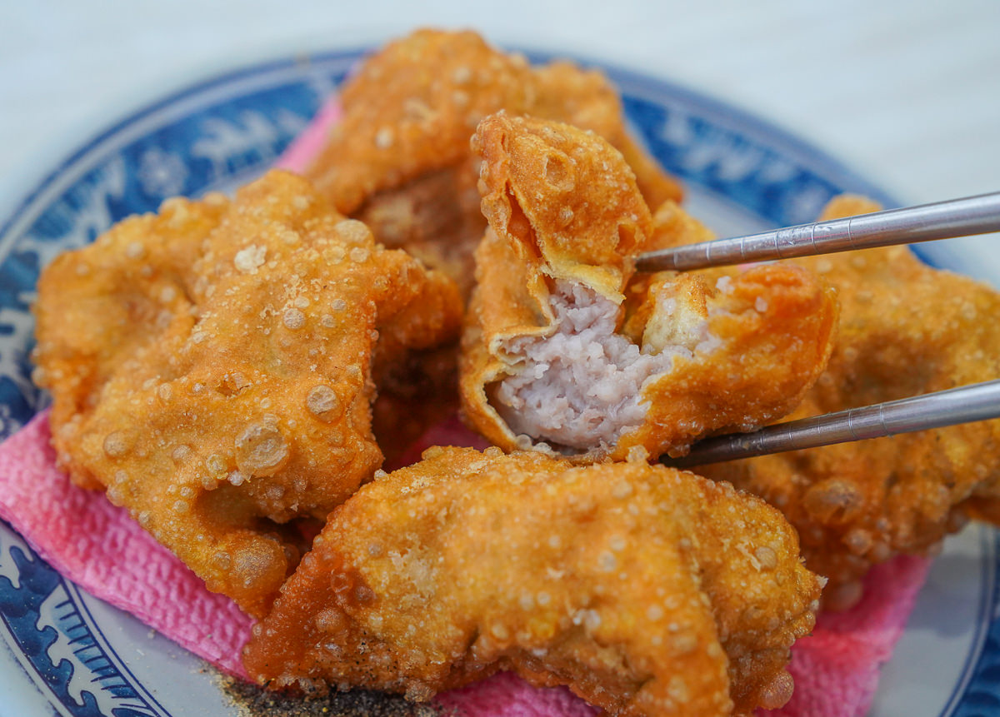
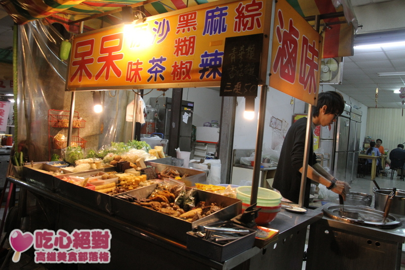
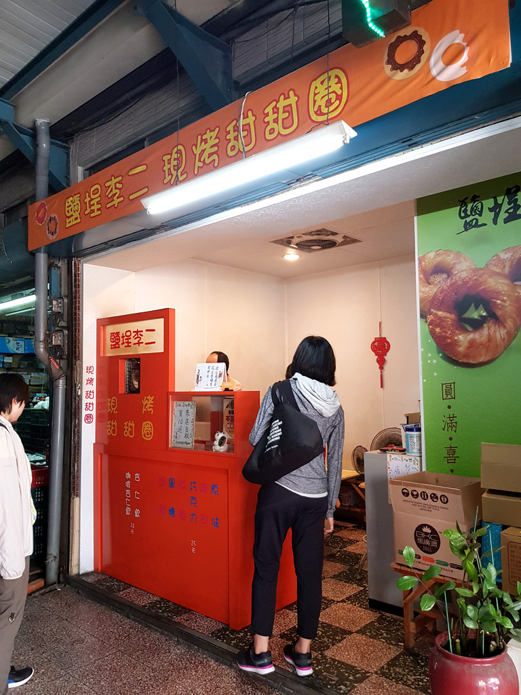
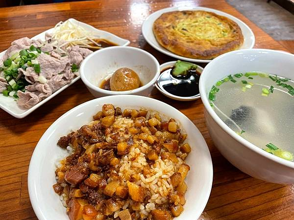

鴨肉珍可以說是高雄赫赫有名的老店，開業至今已經超過65年歷史，2022年還獲得米其林必比登小吃的殊榮，傳統口味搭配上平價親民的價位，每到用餐時間總是門庭若市，不管在地人或觀光客，都頗受大家好評的老店，google評價8000多則4.3顆星，真的相當當威猛啊！
高雄鴨肉珍就位在鹽埕區的五福四路，店面就在馬路旁邊，周邊有很多路邊停車格，鴨肉珍招牌上寫65年老店，基本上絕對是已經超過65年，一整天都有人排隊用餐，生意真的非常好！有兩間店面，座位區是在右邊的店面還有騎樓，先找座位再點餐
營業時間：10:00–20:20（週一二公休）
沒有內行人告訴你，你絕對不知道的深夜火鍋，店內沒有特別的裝潢，雖然比較簡陋，但桌椅環境還算乾淨而且還有冷到爆的冷氣和冰紅茶，鍋中滿滿的料就打趴其他間連鎖火鍋，以CP值來說絕對是首選，想吃飽又想便宜來這間準沒錯。
地點:807高雄市三民區中華三路265號
營業時間:16:00–01:00(周二公休)
菜單上光是餛飩吃法就不知道幾種，炸餛飩招牌，餛飩湯麵和餛飩乾麵各有支持者，敢吃辣也推薦紅油抄手。
招牌炸餛飩，金黃色的餛飩炸完如同元寶，撒上胡椒鹽，剛上桌香氣撲鼻，說他是元寶一點也不為過，夾起來沉甸甸的，一口咬下，外皮酥脆喀滋響，餡料鮮甜飽滿，一顆大概兩口完食～
地點:803高雄市鹽埕區大仁路213號
營業時間:16:30–00:00(周四公休)
三樣菜類50元，CP值滿滿，店內提供四種醬料可以使用，有原味、沙茶、黑胡椒、麻辣，建議都可以試看看那種適合自己的口味哦！
地點:高雄市鹽埕區新樂街149之1號
營業時間:15:00-00:00(周日公休)
甜甜圈有草莓 黑糖、奶酥、巧克力、起司和原味目前有買十送一的活動另外還有賣杏仁飲、咖啡杏仁飲
整體吃起來是偏甜一些些，怕甜的朋友可斟酌一下，我個人覺得還算是不錯吃而且一個才25元也不貴，下午肚子小餓來上一個是不錯的選擇。
地點:高雄市鹽埕區新樂街213-7號
營業時間:12:00~售完
柏弘肉燥於1969年從青年夜市路邊攤起家，現在已傳承到第三代經營，2020年獲得高雄肉燥飯爭霸賽冠軍，2022年榮獲米其林必比登推介，除了青年路老店，在左營、鳳山文山特區都有分店。
肉燥雖然有著油香，但是味道並不會太鹹，帶點甜味，是南部人喜愛的口味，香味四溢的肉燥飯，也是遊子最懷念的家鄉味。吃完嘴唇會黏黏的，膠質很多。
地點:802高雄市苓雅區青年一路167-2號
營業時間:17:00–00:30(周二公休)
